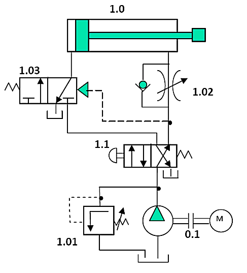
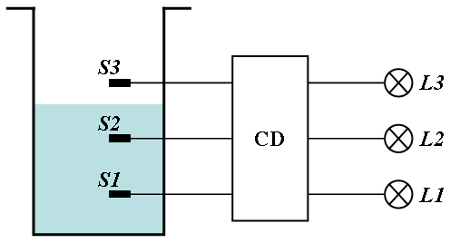

EBAU 2025 · Tecnología e Ingeniería II · Castilla y León · Ordinaria
El ejercicio consta de cuatro apartados obligatorios. El primero tiene una única pregunta; en los otros tres se elige una de las dos. Aquí se resuelven todas. Selecciona un apartado o una pregunta en la barra lateral.
Apartado 1 · Propiedades y ensayo (obligatoria)
Ensayo de tensión de una barra de aluminio a partir de la tabla de datos carga–longitud.
Apartado 2 · Estructuras / Máquinas térmicas
Elige: viga con dos cargas puntuales o bomba de calor real (30 % de un ciclo de Carnot).
Apartado 3 · Neumática / Corriente alterna
Elige: instalación oleohidráulica o circuito RLC en serie.
📄 Enunciado
Cuestión. Define la resiliencia de un material. (0,5 ptos.)
Problema. Los resultados de un ensayo de tensión de una barra de aluminio son los de la tabla. La probeta tiene longitud calibrada L0 = 5,08 cm y diámetro D0 = 1,283 cm. Tras la rotura, Lf = 5,575 cm y Df = 1,01 cm. El límite elástico es 248 MPa. Determina:
| Carga (N) | Longitud (cm) |
|---|---|
| 0 | 5,08 |
| 4448 | 5,0825 |
| 13344 | 5,0876 |
| 22240 | 5,0927 |
| 31136 | 5,0978 |
| 33360 | 5,1562 |
| 35139 | 5,2832 |
| 35584 (máx.) | 5,3848 |
| 35361 | 5,4864 |
| 33804 (rotura) | 5,6007 |
- Resistencia a la tracción. (0,5 ptos.)
- Módulo de Young. (0,5 ptos.)
- Porcentaje de elongación máxima. (0,5 ptos.)
- Deformación correspondiente a una carga de 31136 N. (0,5 ptos.)
💡 ¿Qué vamos a aplicar?
Sección inicial \(A_0=\frac{\pi D_0^2}{4}\). La resistencia a la tracción es \(R_m=\frac{F_{\max}}{A_0}\). El módulo de Young es la pendiente de la zona elástica \(E=\frac{\sigma}{\varepsilon}\). La elongación \(\%=\frac{L_f-L_0}{L_0}\cdot100\). La deformación \(\varepsilon=\frac{\Delta L}{L_0}\).
Cuestión · resiliencia
La resiliencia es la energía que absorbe un material en la zona elástica (hasta el límite elástico) por unidad de volumen; es el área bajo la curva σ–ε en dicha zona. Representa la capacidad de absorber energía sin deformarse permanentemente.
Datos: \(A_0=\frac{\pi\cdot1{,}283^2}{4}=1{,}293\ \mathrm{cm^2}=129{,}3\ \mathrm{mm^2}\).
a) Resistencia a la tracción
Con la carga máxima Fmáx = 35584 N:
b) Módulo de Young
En la zona elástica (lineal), usando el punto de 31136 N (aún por debajo del límite elástico), con ΔL = 5,0978 − 5,08 = 0,0178 cm:
c) Porcentaje de elongación máxima
d) Deformación con carga de 31136 N
📄 Enunciado
Problema. La viga de la figura tiene aplicadas las dos fuerzas indicadas (P₁ = P₂ = 2000 N).
- Calcula las reacciones en los apoyos. (0,5 ptos.)
- Calcula los esfuerzos cortantes y momentos flectores. (1,25 ptos.)
- Representa los diagramas. (0,75 ptos.)
💡 ¿Qué vamos a aplicar?
Equilibrio: \(\sum M_A=0\), \(\sum F_y=0\). La carga P₂ está aplicada sobre el apoyo A, por lo que pasa directamente a su reacción; sólo P₁ (en B) genera momento respecto a A.
a) Reacciones
\(\sum M_A=0\): \(R_C\cdot10=P_1\cdot5=2000\cdot5=10000\Rightarrow R_C=1000\ \mathrm N\).
b) Cortantes y momentos
Justo a la derecha de A, la carga P₂ ya se ha descontado: V = RA − P₂ = 3000 − 2000 = +1000 N (tramo A–B). En B baja P₁: V = 1000 − 2000 = −1000 N (tramo B–C).
Momento en B (x = 5 m): \(M_B=R_A\cdot5-P_2\cdot5=3000\cdot5-2000\cdot5=5000\ \mathrm{N\,m}\). En A y C, M = 0.
c) Diagramas
📄 Enunciado
Cuestión. Explica la transformación isoterma para un gas: representa la gráfica p–V y escribe las fórmulas del trabajo y el calor. (0,5 ptos.)
Problema. Un local con temperatura exterior 5 °C necesita una bomba de calor que aporta a su interior 214·10³ kJ en una hora para mantenerlo a 21 °C. Sabiendo que la bomba real aprovecha sólo el 30 % de un ciclo de Carnot reversible, calcula:
- La eficiencia de la máquina reversible. (0,75 ptos.)
- La eficiencia de la máquina real. (0,5 ptos.)
- La potencia a la que funciona la bomba (kW). (0,75 ptos.)
💡 ¿Qué vamos a aplicar?
COP de Carnot: \(\mathrm{COP}_{rev}=\frac{T_c}{T_c-T_f}\) (K). La real es el 30 %: \(\mathrm{COP}_{real}=0{,}30\,\mathrm{COP}_{rev}\). La potencia sale de \(\dot W=\dot Q_c/\mathrm{COP}_{real}\).
Cuestión · transformación isoterma
A temperatura constante (ΔU = 0 para gas ideal). En p–V es una hipérbola (p·V = cte). Todo el calor absorbido se convierte en trabajo:
a) Eficiencia reversible (COP)
Tc = 21 °C = 294 K, Tf = 5 °C = 278 K.
b) Eficiencia real
c) Potencia de la bomba
Calor aportado \(\dot Q_c=214\cdot10^{3}\ \mathrm{kJ/h}\). El trabajo (energía eléctrica) por hora:
📄 Enunciado
Problema. En la instalación oleohidráulica de la figura:
- Define sus componentes. (1 pto.)
- Explica el funcionamiento. (1 pto.)
- ¿Qué ocurre si al montar la instalación el regulador «1.02» se conecta al revés? (0,5 ptos.)

💡 ¿Qué vamos a aplicar?
Identificamos el actuador, el distribuidor que lo gobierna, la reguladora de caudal (control de velocidad), la limitadora de presión (seguridad) y el grupo de presión (motor + bomba).
a) Componentes
- 1.0 — Cilindro hidráulico de doble efecto.
- 1.1 — Distribuidor 4/2 con pilotaje y retorno por muelle: dirige el aceite a cada cámara.
- 1.02 — Reguladora de caudal unidireccional (estrangulador + antirretorno): controla la velocidad del émbolo.
- 1.03 — Válvula 3/2 pilotada (mando).
- 1.01 — Válvula limitadora de presión (seguridad, tara la presión máxima).
- 0.1 — Grupo de presión: bomba movida por el motor eléctrico M (con depósito).
b) Funcionamiento
El motor M acciona la bomba, que aspira aceite del depósito y lo impulsa a presión (limitada por 1.01). Según la posición del distribuidor 1.1, el aceite entra en una u otra cámara del cilindro produciendo el avance o el retroceso; el aceite de la cámara opuesta retorna al depósito. La reguladora 1.02 estrangula el caudal para fijar la velocidad. Al despilotar, el muelle devuelve el distribuidor a su posición de reposo.
c) Regulador 1.02 conectado al revés
La reguladora es unidireccional: si se monta al revés, el antirretorno deja pasar libremente el aceite en el sentido en el que debería estrangular y estrangula donde debería pasar libre. Resultado: no se regula la velocidad en la carrera prevista (el émbolo va a velocidad máxima) y se estrangula la otra, invirtiéndose el efecto de control.
📄 Enunciado
Problema. En un circuito serie con corriente eficaz 1,2 A hay una resistencia, una bobina de 0,7 H y un condensador de 40 µF, alimentados a 230 V eficaces y 50 Hz. Calcula:
- La resistencia del circuito. (0,75 ptos.)
- Si es inductivo o capacitivo y el factor de potencia. (0,75 ptos.)
- El balance de potencias. (0,5 ptos.)
- Dibuja el triángulo de potencias. (0,5 ptos.)
💡 ¿Qué vamos a aplicar?
\(X_L=2\pi f L\), \(X_C=\frac1{2\pi f C}\). \(Z=V/I=\sqrt{R^2+(X_L-X_C)^2}\Rightarrow R\). El signo de \(X_L-X_C\) indica si es inductivo o capacitivo. \(P=I^2R\), \(Q=I^2(X_L-X_C)\), \(S=VI\).
a) Resistencia
b) Carácter y factor de potencia
Como XL = 219,9 Ω > XC = 79,6 Ω, el circuito es inductivo (la corriente atrasa).
c) Balance de potencias
d) Triángulo de potencias
📄 Enunciado
Cuestión. Define las funciones elementales OR y NOR, con sus ecuaciones lógicas, tablas de verdad y la diferencia entre ellas. (0,5 ptos.)
Problema. El circuito digital CD indica el nivel de agua. Si no llega a S1, ninguna lámpara; si llega a S1, sólo L1; si llega a S2, sólo L2; si llega a S3, sólo L3. Cualquier combinación imposible (fallo) enciende las tres.
- Tabla de verdad de las tres salidas. (0,75 ptos.)
- Simplifica por Karnaugh las tres funciones. (0,75 ptos.)
- Expresión simplificada con lógica NAND. (0,5 ptos.)

💡 ¿Qué vamos a aplicar?
Los sensores se activan de abajo arriba: son válidos 000, 100, 110, 111 (con salida un único LED); cualquier otra combinación es un fallo y enciende las tres lámparas. Se construye la tabla y se simplifica cada salida por Karnaugh.
Cuestión · OR y NOR
OR: \(F=A+B\), vale 1 si alguna entrada es 1. NOR: \(F=\overline{A+B}\), es la OR negada (vale 1 sólo si todas son 0).
| A | B | OR | NOR |
|---|---|---|---|
| 0 | 0 | 0 | 1 |
| 0 | 1 | 1 | 0 |
| 1 | 0 | 1 | 0 |
| 1 | 1 | 1 | 0 |
a) Tabla de verdad
Entradas (S1, S2, S3). Válidos: 000→ninguna, 100→L1, 110→L2, 111→L3; el resto son fallos (las tres).
| S1 | S2 | S3 | L1 | L2 | L3 |
|---|---|---|---|---|---|
| 0 | 0 | 0 | 0 | 0 | 0 |
| 0 | 0 | 1 | 1 | 1 | 1 |
| 0 | 1 | 0 | 1 | 1 | 1 |
| 0 | 1 | 1 | 1 | 1 | 1 |
| 1 | 0 | 0 | 1 | 0 | 0 |
| 1 | 0 | 1 | 1 | 1 | 1 |
| 1 | 1 | 0 | 0 | 1 | 0 |
| 1 | 1 | 1 | 0 | 0 | 1 |
b) Simplificación por Karnaugh
c) Lógica NAND
Cada suma de productos se pasa a NAND con doble negación (De Morgan): un producto \(A\,B=\overline{\mathrm{NAND}(A,B)}\) y la suma \(P_1+P_2+\dots=\overline{\overline{P_1}\cdot\overline{P_2}\cdots}=\mathrm{NAND}(\overline{P_1},\overline{P_2},\dots)\). Por ejemplo:
Las tres funciones se implementan de forma análoga con puertas NAND (cada producto con una NAND y la unión con otra NAND).
📄 Enunciado
Cuestiones.
- ¿Cuál es la principal diferencia en la estructura de un control en lazo abierto y en lazo cerrado? (0,5 ptos.)
- Explica una aplicación actual del Procesamiento de Lenguaje Natural (PLN). (0,5 ptos.)
Problema. Calcula la función de transferencia Y(s)/R(s) del sistema de la figura. (1,5 ptos.)
💡 ¿Qué vamos a aplicar?
Las ramas en paralelo se suman (G1+G2) y el lazo con realimentación negativa da \(\frac{G}{1+GH}\).
a) Lazo abierto vs. lazo cerrado
La diferencia estructural es la realimentación: el lazo cerrado mide la salida y la devuelve al comparador para corregir el error; el lazo abierto no tiene realimentación (la salida no influye en la acción de control).
b) Aplicación del PLN
Los asistentes virtuales y chatbots (o los traductores automáticos): entienden y generan lenguaje humano para responder preguntas, traducir textos o transcribir voz a texto. También el análisis de sentimiento en redes sociales.
Problema · Y/R
Sea X la salida del sumador de entrada: \(X=R-H_1Y\). Las ramas G1 y G2 parten del mismo punto y se suman: